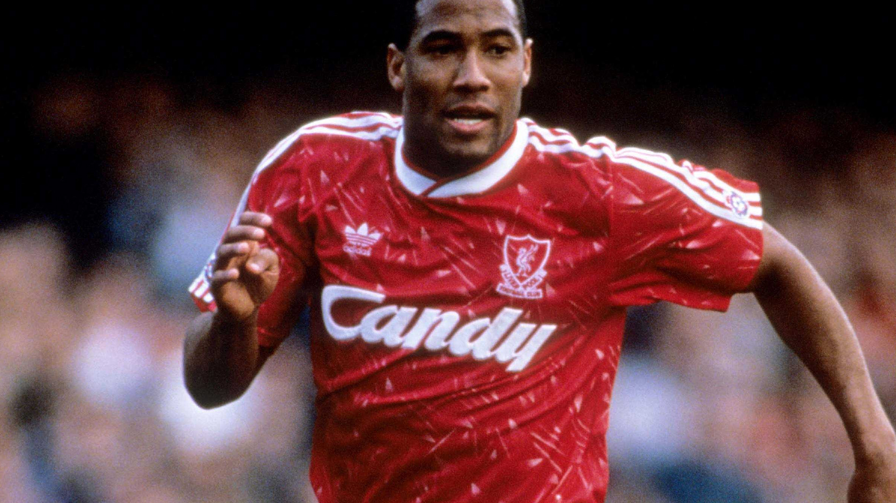

Liverpool FC Home Kit
1989

In 1989, my journey to Liverpool was a captivating adventure steeped in the rich traditions of football. Navigating the bustling streets of the city, I made my way to the iconic Anfield, the hallowed ground of Liverpool Football Club. The anticipation in the air was palpable as I entered the spirited atmosphere surrounding the stadium. Venturing into the club's merchandise store, I was drawn to the iconic Liverpool kit. The vibrant red jersey, adorned with the Liverbird emblem, became an emblematic representation of my support for the club. As I donned the kit, I felt an immediate connection to the fervent spirit of the Anfield faithful. The match, an exhilarating display of skill and passion, added another layer to my Liverpool experience, witnessing firsthand the magic of the beautiful game in a city that lives and breathes football. The Liverpool kit, a cherished memento, serves as a tangible link to the vibrant energy of the city and the enduring legacy of a club steeped in football history. The memories of that journey, the vibrant atmosphere, and the iconic kit continue to evoke a sense of pride and camaraderie in my heart.